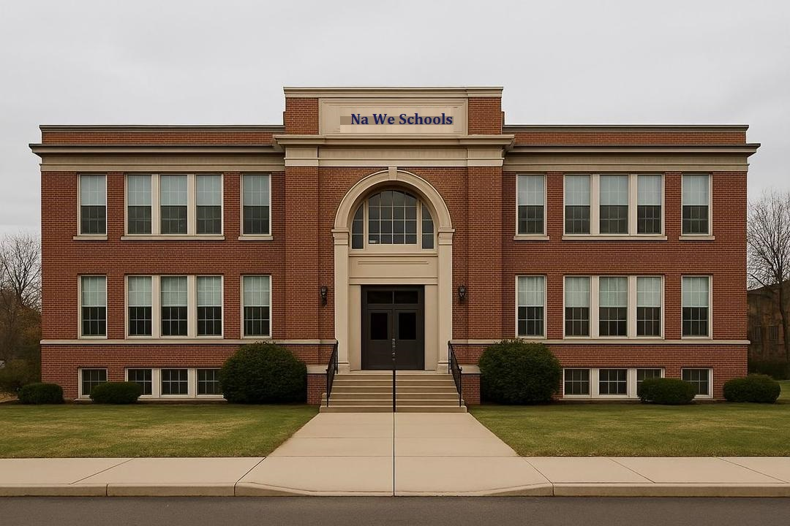

At Na We Schools, we believe technology is not just a tool, but a powerful gateway to shaping the future. Our vision is to nurture young innovators who will not only understand today’s digital world but also redefine it. We equip our students with hands-on skills, problem-solving abilities, and real-world exposure that prepare them to take bold steps in the world of technology. We recognize that the future belongs to those who embrace innovation. That is why our curriculum goes beyond theory, focusing on practical experiences that encourage creativity and critical thinking. From coding to robotics, our students learn to design solutions that matter. Technology is advancing at lightning speed, and Na We Schools ensures our learners stay ahead of the curve. We introduce them to emerging fields such as Artificial Intelligence, Cybersecurity, Data Science, and Digital Entrepreneurship, setting them on paths where they can become leaders. Beyond skills, we inspire a mindset of continuous growth. We teach our students to ask questions, challenge systems, and think differently. This culture of curiosity and innovation ensures that every graduate of Na We Schools is not just a consumer of technology but a creator of it. By building strong foundations today, we prepare our students for tomorrow. At Na We Schools, innovation is not optional—it is our identity.

Our mission at Na We Schools is to empower young minds and prepare them for leadership in a digital-first world. We understand that knowledge without empowerment has little impact, so we combine academic excellence with practical training that develops confidence, creativity, and resilience. We encourage every student to see themselves as a future leader. Through mentorship programs, teamwork projects, and leadership workshops, learners gain the courage to step forward, take responsibility, and inspire others. This combination of technical knowledge and leadership training sets our students apart. Digital leadership is not only about managing technology; it is about using it to solve real challenges. At Na We Schools, we teach students to identify problems in their communities and use digital tools to create solutions. This instills responsibility and a sense of purpose. Our graduates are not just tech experts; they are visionaries with the ability to guide teams, start businesses, and create jobs. We prepare them to lead ethically, making technology a force for good. In every student, we see a future changemaker. Na We Schools exists to bring that potential to life.
 link to about.html
link to about.html